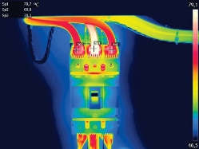
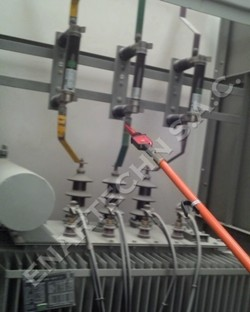
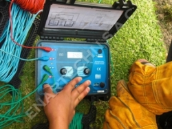

NOSOTROS
¿QUIENES SOMOS?
La empresa fue constituida el 2014, para brindar servicios de ingeniería, construcción, comisionamiento, mantenimiento para el sector minero, industrial, electrico y gas. Consideramos que todo sistema siempre puede mejorar, en proceso de producción y calidad, reduciendo a su vez los costos operativos. El ahorro energético es IMPORTANTE, ya que actualmente el medio ambiente, viene manifestandose con diversos cambios climaticos, innovar e introducir nuevas tecnológias para reducir los consumos execivos, nos motivaron a formar esta nuestra empresa.
MISIÓN
Ejecutar trabajos con seguridad,calidad y productividad, velando por el factor humano y medio ambiental; a su vez garantizar la confiabilidad de todos nuestros servicios. Es así que uno de nuestros pilares son el "Personal Profesional Capacitado" el cual cuenta con una trayectoria de campo para realizar los trabajos optimamente y el "Medio Ambiente" el cual debe ser cuidado y se debe consumir lo necesario para evitar los actuales fenómenos climaticos, buscar soluciones y nuevas tendencias es nuestra misión. Así mismo queremos que nuestros trabajadores esten conformes con su trabajo y sean tratados como se merecen.
VISIÓN
Ser una empresa lider en brindar servicios que vayan de la mano con las personas, el medio ambiente y calidad de nuestro trabajo. Brindar soluciones óptimas para reducir hasta un 75% el consumo energético del País Ser reconocidos por realizar los adecuados mantenimientos predictivos que anticipen eventos de fallas
ANÁLISIS TERMOGRÁFICO
¿Por que es importante?

La termografía es una técnica que permite calcular y determinar temperaturas a distancia, con exactitud y sin necesidad de contacto físico con el objeto a estudiar.
La termografía permite captar la radiación infrarroja del espectro electromagnético, utilizando cámaras termográficas o de termovisión. Conociendo los datos de las condiciones del entorno (humedad y temperatura del aire, distancia a objeto termografiado, temperatura reflejada, radiación incidente,...) y de las características de las superficies termografiadas como la emisividad se puede convertir la energía radiada detectada por la cámara termográfica en valores de temperaturas.
INDICADOR DE TENSIÓN
¿Es necesario utilizarlo?

Este es el texto de la noticia
Equipos que utilizamos en mantenimiento eléctrico, control de procesos y análisis en la calidad de energia
Al momento de realizar una Terminación en Media Tensión, debemos de respetar las medidas de corte del aislante,semiconductora, pantalla metálica y la cubierta.
Lo mas importante es aplicar el KIT de limpieza adecuadamente, dejando sin impurezas el aislante.
Tomando en cuenta estas dos recomendaciones y las de su manual, realizaremos una terminacion evite la corriente de fuga, controle el campo y su recubrimiento sea hermético.
Recuerde que el Aire Ionizado mata los aislamientos.
TERMINACIONES EN FRÍO DE MT
¿Qué debemos tomar en cuenta?
Al momento de realizar una Terminación en Media Tensión, debemos de respetar las medidas de corte del aislante,semiconductora, pantalla metálica y la cubierta.
Lo mas importante es aplicar el KIT de limpieza adecuadamente, dejando sin impurezas el aislante.
Tomando en cuenta estas dos recomendaciones y las de su manual, realizaremos una terminacion evite la corriente de fuga, controle el campo y su recubrimiento sea hermético.
Recuerde que el Aire Ionizado mata los aislamientos.
Tomando en cuenta estas dos recomendaciones y las de su manual, realizaremos una terminacion evite la corriente de fuga, controle el campo y su recubrimiento sea hermético.
PRUEBAS DE AISLAMIENTO
¿Donde realizarlas

Este es el texto de la noticia
Equipos que utilizamos en mantenimiento eléctrico, control de procesos y análisis en la calidad de energia
Al momento de realizar una Terminación en Media Tensión, debemos de respetar las medidas de corte del aislante,semiconductora, pantalla metálica y la cubierta.
Lo mas importante es aplicar el KIT de limpieza adecuadamente, dejando sin impurezas el aislante.
Tomando en cuenta estas dos recomendaciones y las de su manual, realizaremos una terminacion evite la corriente de fuga, controle el campo y su recubrimiento sea hermético.
Recuerde que el Aire Ionizado mata los aislamientos.